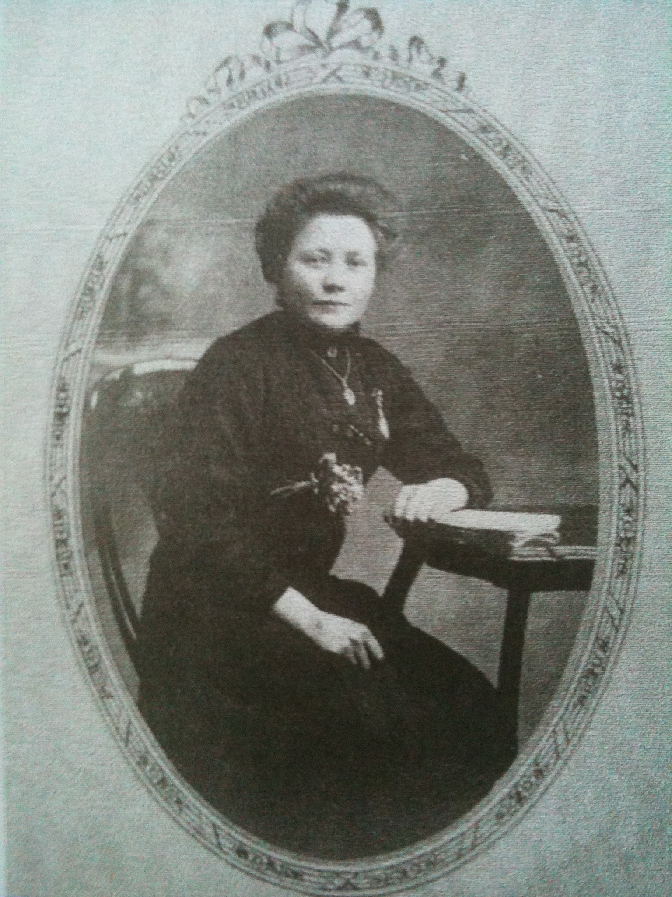
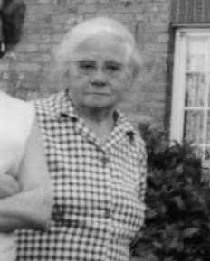
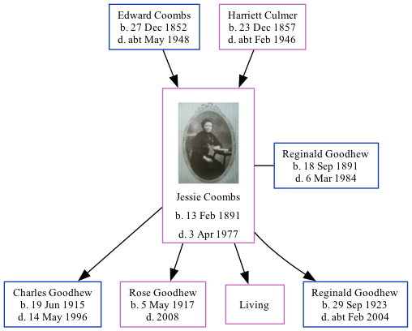

Jessie May Goodhew (née Coombs) 1891 - 1977
[ Home ] | [ Calendar ] | [ Surnames Index ] | [ Family History ]A cook and the daughter of Edward Coombs (an agricultural laborer) and Harriett Culmer, Jessie Coombs, the second cousin twice-removed on the mother's side of Nigel Horne, was born in Hernhill, Kent, England on Feb 13, 18911,2 and married Reginald Goodhew (an aircraft fitter with whom she had 4 children: Charles Thomas, Rose May, Marie Louise and Reginald Norman, along with 1 surviving child) at Parish Church in Hernhill on Aug 4, 19143.
Throughout her life, Jessie lived in several places: on Waterham Road in Hernhill on Apr 5, 18916; at Red Lion Inn in Hernhill on Mar 31, 19017; in St Mary Cray, Kent, England on Apr 2, 1911; on 137 Dearne Road, Bolton-upon-Dearne, South Yorkshire, England on Nov 13, 19164 and in 19195; and on 18 Pine Road, Rochester, Kent on Sep 29, 19391.
She died on Apr 3, 1977 in Hernhill2.
Parents
- Edward was born on Dec 27, 1852
- Harriett was born on Dec 23, 1857
Children
- Charles Thomas was born on Jun 19, 1915
- Rose May was born on May 5, 1917
- Reginald Norman was born on Sep 29, 1923
Citations
- 1939 Register - Findmypast (was the wife of the head of the household)
- England & Wales deaths 1837-2007 - Findmypast
- England & Wales Marriages 1837-2005 - Findmypast
- British Army WWI Service Records, 1914-1920 Online publication - Provo, UT, USA: Ancestry.com Operations Inc, 2008.Original data - War Office: Soldiers" Documents, First World War "Burnt Documents" (Microfilm Copies); (The National Archives Microfilm Publication WO363); Records created or inherited
- Electoral Roll
- 1891 England, Wales & Scotland Census - Findmypast (was age 0 and the daughter of the head of the household)
- 1901 England, Wales & Scotland Census - Findmypast (was age 10 and the daughter of the head of the household)
Media
Jessie Coombs

Jessie Coombs - 2

1891 England, Wales & Scotland Census - GBC/1891/0005777451
England & Wales births 1837-2006 - BMD/B/1891/1/AZ/000125/016
England & Wales marriages 1837-2008 - BMD/M/1914/3/AZ/000241/002
England & Wales deaths 1837-2007 - BMD/D/1977/2/AZ/000420/084
1939 Register Transcription - TNA-R39-1769-1769C-019-05
Family Tree
Generated by Ged2Site. Last updated on Jul 20, 2025